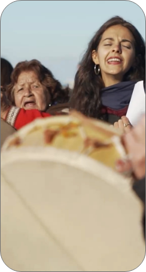
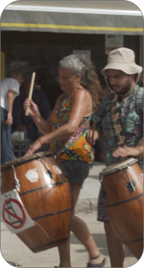
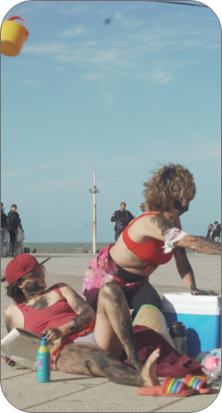

Serie
Archivo Vivo ›
Candombe

Copleras

Próximamente
Cultura
Africana
 Próximamente
Próximamente
Teatro

PróximamenteHappening
 Próximamente
Próximamente
Audiovisual
La serie reúne testimonios de artistas que hicieron del arte un acto de resistencia durante el Atlanticazo. A través de entrevistas sensibles, recorre voces y cuerpos de diversas disciplinas que construyeron una respuesta estética y política frente al extractivismo. Más que explicar, busca captar el pulso común de esa lucha: cada episodio es una ola de memoria y creación, una cartografía viva del artivismo.